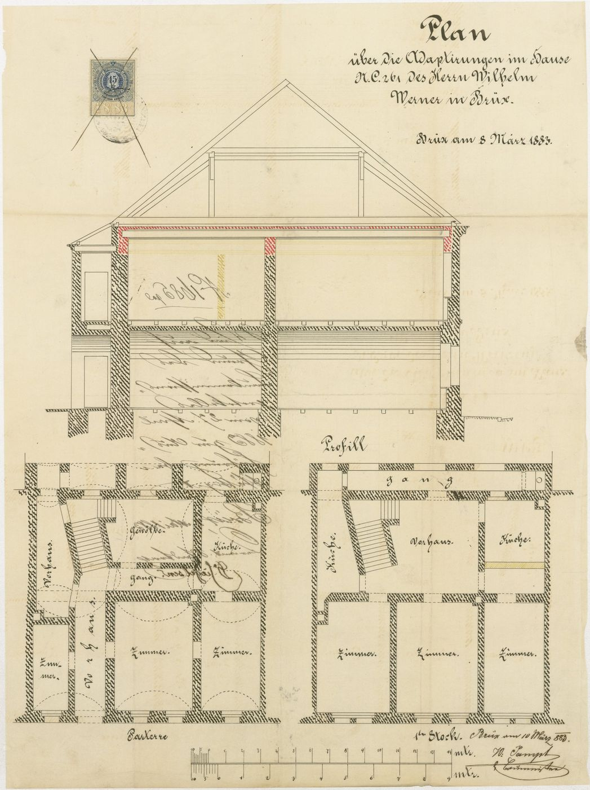
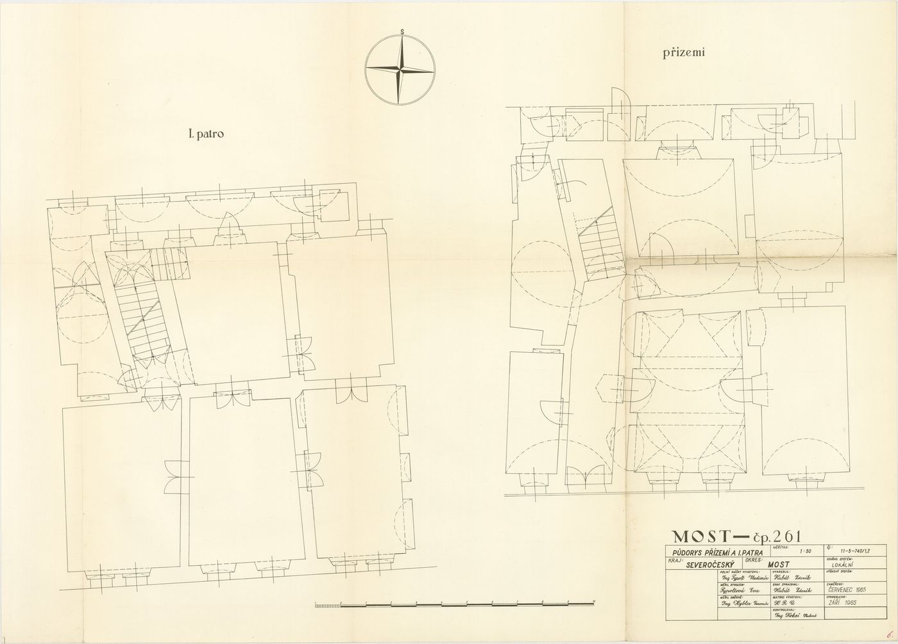
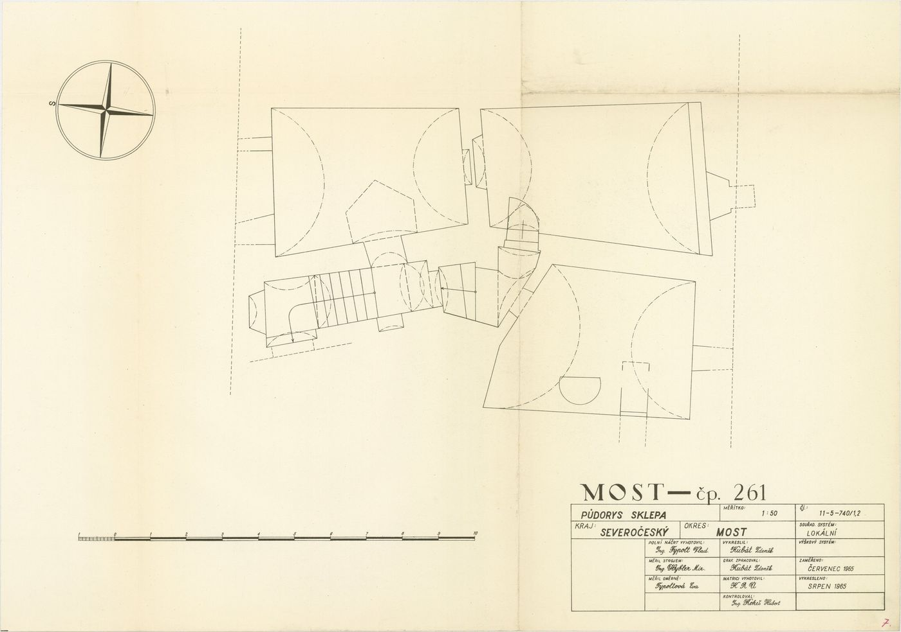
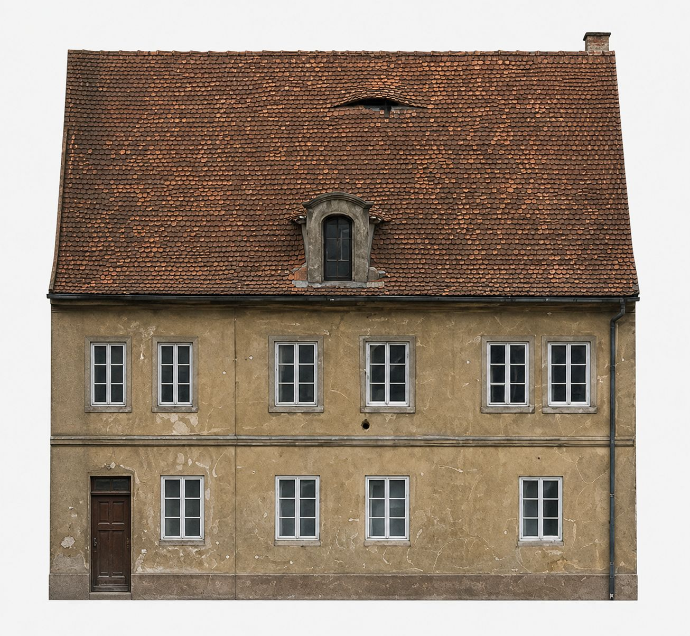
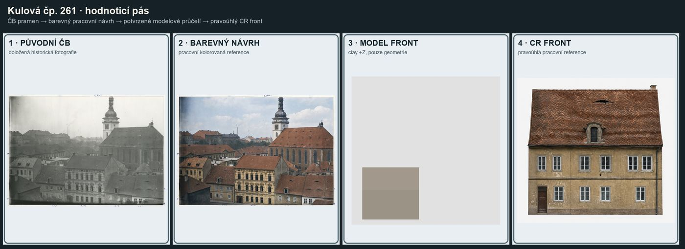
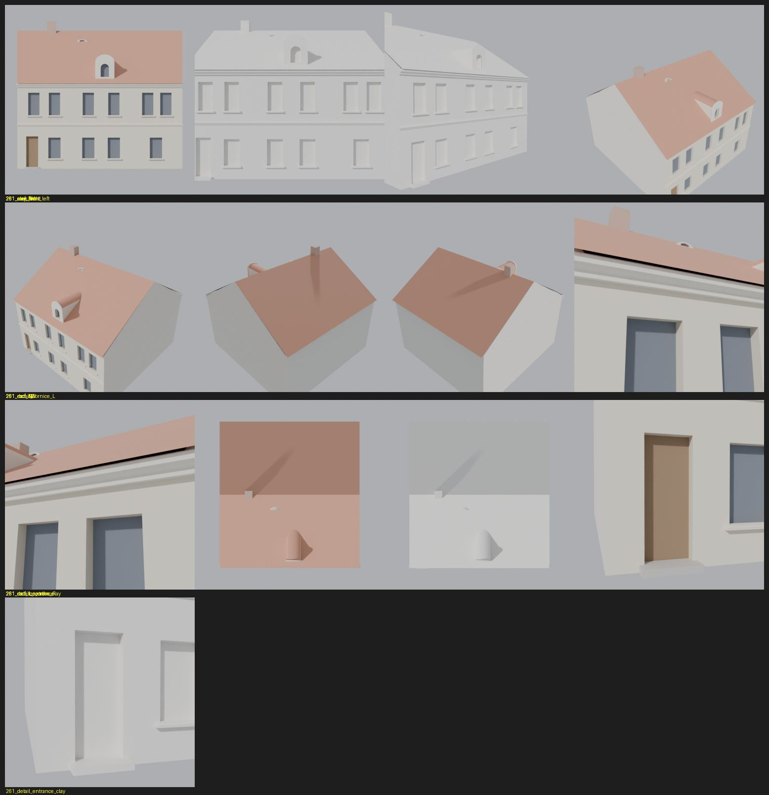

Identita domu
Dvoupodlažní dům vlevo od čp. 262. Ve střeše barokní vikýř se zaobleným vrcholem a malé volské oko výš ve svahu, vlevo vstupní dveře se schodem.
Použité prameny: řezy a půdorysy 1889 (cp_261_001), zaměření ze 60. let (cp_261_001__2), fotografie řady 261–262–263, plán střech bloku 260–263, databázový barevný FRONT.
Přílohy v databázi (11)
Všechny přílohy struktury 261 v databázi Libuše, načtené 18. 10. 2026 a otevřené. Kliknutím otevřete větší náhled.

plán / výkres
SHA-256 9f83578eb0c9…


plán / výkres
SHA-256 764e080efd15…


plán / výkres
SHA-256 6fa024a10a3b…


plán / výkres
SHA-256 d5f73b881e25…

fotografie
SHA-256 8422592be672…

archivní karta
SHA-256 84ed644e75f3…

odvozenina (kolorovaná / FRONT)
SHA-256 8e228f324ba9…

odvozenina (kolorovaná / FRONT)
SHA-256 7be152934800…


odvozenina (kolorovaná / FRONT)
SHA-256 34ad3f97a36d…


odvozenina (kolorovaná / FRONT)
SHA-256 2e9f02f3c999…

odvozenina (kolorovaná / FRONT)
SHA-256 8751fa795ce6…
Geometrie
| Revize geometrie | r5 |
|---|---|
| Poloha | GIS půdorys id 7 (ulice Kulová) |
| Šířka průčelí | 13,75 m |
| Výška okapu | 7,10 m (odhad) |
| Podlaží | 2 |
| Střecha podle pramenů | sedlová, štíty na obou koncích (plán střech bloku) |
| Otvory / vikýře | 13 / 2 |
| Polygonů | 288 |
Kontrolní pohledy

Střešní otvory
Každý otvor ve střeše zepředu, zleva, zprava, shora a zezadu; řádky: materiálová ID, clay a hlavní krytina purpurově (ověření, že v otvoru není plocha hlavní střechy).


Textury
Codex: pracovní textury na starší geometrii, čeká na převázání na r5
Až Codex dodá texturovaný model, objeví se v prohlížeči nahoře volba Textury (Codex).
Hypotézy
Vše níže je model_hypothesis, provisional, locked: false.
- opening positions are fractions of width from prior registration, not measured
- baroque dormer simplified to gable box with arched niche
- right end gable abuts cp. 262 firewall; left hip per photo impression; provisional
- rear facade blind
- eb_top: position from FRONT photo (x~5.4 m, ~78 % up the slope), size estimated – provisional
- door step 0.14 m: one step visible in photo, height estimated – provisional
- baroque dormer: curved top + frame per photo; depth/rear hypothetical
Soubory
- Geometrie čp. 261, GLB
- Pracovní model: F:\MOST\output\kulova_geo_qa_claude_2026-10-18\houses\cp261\r5\cp_261_G_r5.blend
- Plán modelu: F:\MOST\output\kulova_geo_qa_claude_2026-10-18\houses\cp261\geometry_plan.json